Дизайн виджетов ttk включает в себя три уровня абстракции:
Тема - это полный "внешний вид и ощущение". Она настраивает внешний вид всех виджетов.
Стиль - это описание внешнего вида одного типа виджета. Каждая тема поставляется с предопределенным набором стилей, но вы можете настраивать встроенные стили или создавать свои собственные.
Фраза "вид виджета" в предыдущем абзаце технически относится к "классу" виджета. Однако в мире ttk это отличается от классов Python. В ttk класс виджета - это символьная строка. Например, класс виджета Button в ttk - это строка 'TButton'.
Каждый стиль состоит из одного или нескольких элементов. Например, стиль типичной кнопки состоит из четырех элементов: границы вокруг внешней стороны; элемента focus, который меняет цвет, когда виджет имеет фокус; элемента padding (отступ); и метки кнопки (текст, изображение или оба элемента).

Мы обсудим обнаружение, использование и настройку каждого из этих слоев в отдельных разделах.